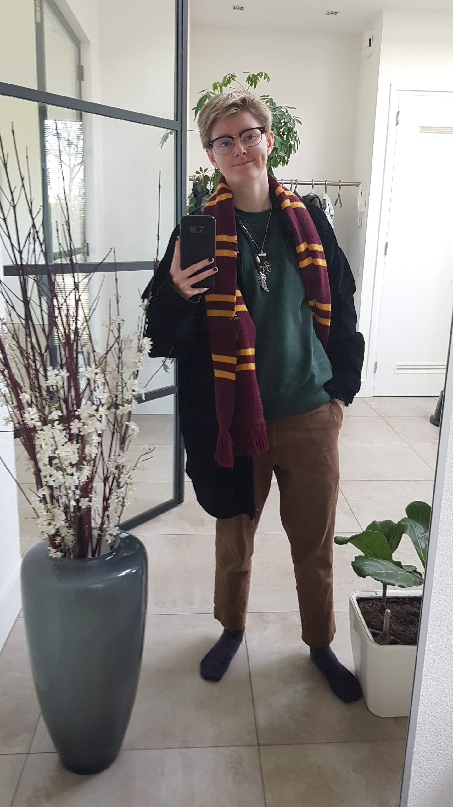
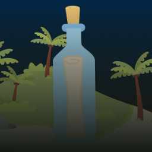
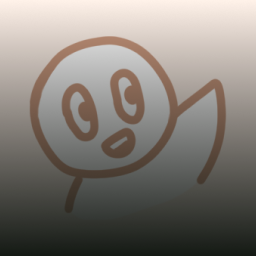
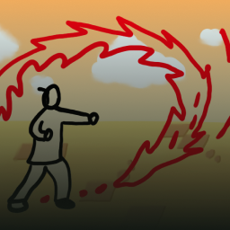
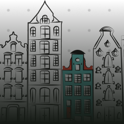

Hi! Ik ben Leo
- UX/UI Design
- Front-end
- Creatief
- Zorgvuldig
- Nieuwsgierig

Wie ben ik?
Zoals het lekker groot voor je neus staat, mijn naam is Leo. Ik ben geboren in 2001 in de beste familie die ik zou willen hebben. Als ik mezelf in één woord zou moeten beschrijven dan is het energie. Energie om te verkennen, om te maken, om te leren, en om mensen blij te maken. Stilte is voor mij echt totaal niet mijn ding, ik hou van praten zelfs tegen mezelf.

Wat is mijn passie?
Verhalen zijn vooral mijn grootste passie. Hierdoor heb ik vooral hobby’s zoals schrijven, lezen, piano spelen, en heel af en toe tekenen. Naast een fan van alle creatieve vakken te zijn ben ik ook van het technische zoals wiskunde en in het algemeen puzzels oplossen. Ik merk ook vaak in het leven dat ik echt tussen creatieve en technische vakken in zit.

Hoe ben ik gegroeid?
Ik vond het in begin van mijn leven nog vrij lastig om met mensen te praten. Ik ging veel beter om met dieren en daar richtte ik dus mijn aandacht op. Rond de helft van mijn middelbare school carrière ging dat aspect van mijn leven beter. Hoe ik verder ben gegroeid was vooral mentaal. Aan mezelf leren ook aan mezelf te denken en niet constant aan anderen en ook weten mijn productiviteit te onderhouden. Het is nog steeds iets waar ik heel sterk aan werk, maar door de jaren heen is het flink verbeterd.
Mijn werk

SandScript

Book Buddy

Avatar: The Game

The DLSK